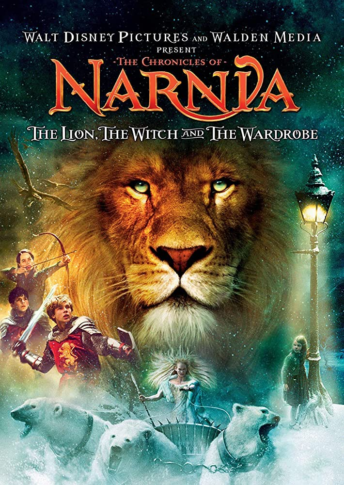

|
Browsehome | add books | search | browse | help |
|  | Title: The Lion, the Witch, and the Wardrobe Author: C.S. Lewis Owner: Simon Summary: (from amazon.com) Four adventurous siblings—Peter, Susan, Edmund, and Lucy Pevensie—step through a wardrobe door and into the land of Narnia, a land frozen in eternal winter and enslaved by the power of the White Witch. But when almost all hope is lost, the return of the Great Lion, Aslan, signals a great change . . . and a great sacrifice. The Lion, the Witch and the Wardrobe is the second book in C. S. Lewis's classic fantasy series, which has been drawing readers of all ages into a magical land with unforgettable characters for over sixty years. |